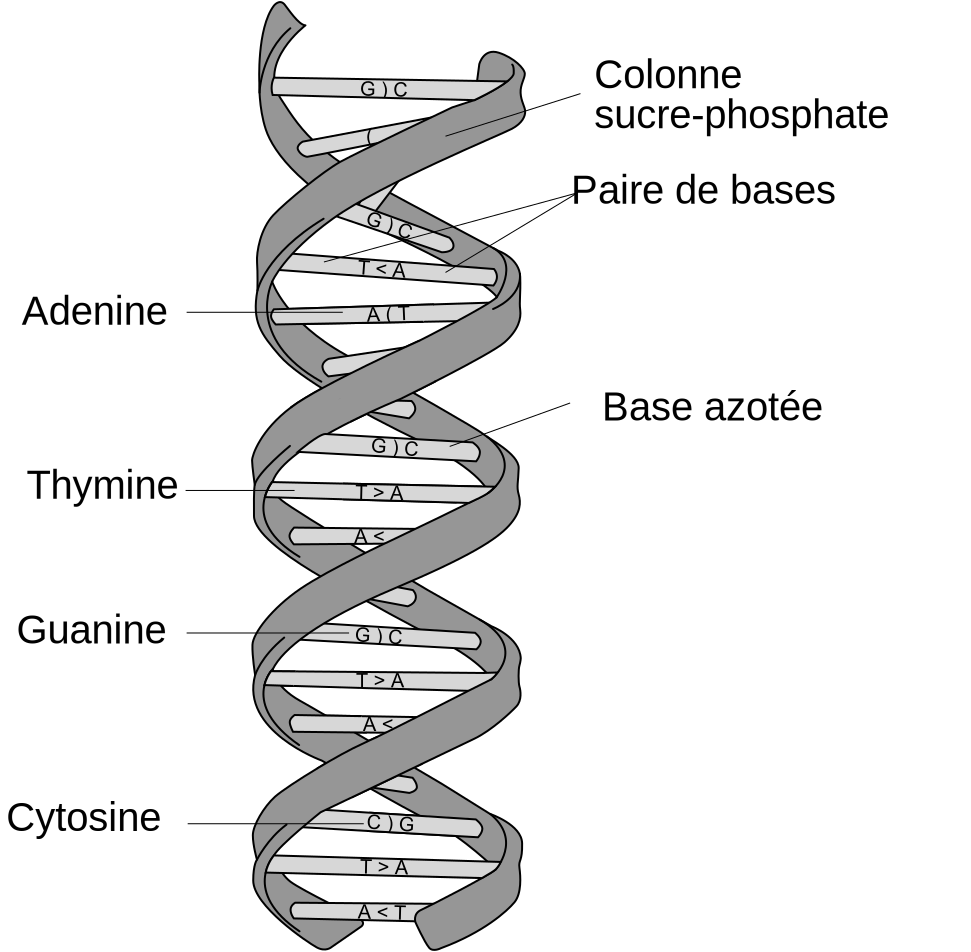

{kind=link}
Germain BECKER, Lycée Mounier, ANGERS

En algorithmique du texte, l'un des grands problèmes est la recherche de motif dans un texte.
Concrètement, rechercher le motif M dans un texte T consiste à rechercher toutes les occurrences de M dans T.
Exemple : Si M = GCAG et T = GGCAGCCGAACCGCAGCAGCAC alors M apparaît 3 fois dans T, aux positions 1, 12 et 15 :
GGCAGCCGAACCGCAGCAGCAC
Applications fréquentes :
Source : Ahora estoy, CC BY-SA 2.0, Flickr

Source : derivative work: Dosto (talk)DNA_structure_and_bases_PL.svg: MesserWoland, CC BY-SA 2.5, via Wikimedia Commons
Notations : Dans la suite on notera m la taille du motif M et n la taille du texte T. On considérera que le motif est de "petite" taille par rapport à celle du motif : m est négligeable devant n.
Exemples : La taille du texte T peut être (très) grande !
En pratique il est donc nécessaire d'utiliser des algorithmes efficaces, qui donnent la réponse en un temps raisonnable.
Nous verrons dans un premier temps un algorithme de recherche naïf qui permettra de comprendre le principe d'une recherche puis, dans un second temps, un algorithme plus efficace appelé algorithme de Boyer-Moore dans sa version simplifiée publiée par Nigel Horspool.
Les différents algorithmes de recherche exacte de motif sont basés sur une recherche par fenêtre glissante dont l'idée est la suivante :
Exemple :
i 0 1 2 3 4 5 6 7 8 9 ... T = G G C A G C C G A A C C G C A G C A G C A C ✔️ ❌ ✔️ M G C A G ⟶ G C A G ⟶ G C A G ⟶ ...
Important : Dans la suite, on notera toujours i la position dans T et j la position dans M.
Pour une position i choisie on est dans la situation suivante
et on peut comparer M[0..m-1] et T[i..i+m-1]
C'est la façon de décaler le motif M et la façon de le comparer avec le texte T qui diffèrent d'un algorithme à l'autre.
L'idée est de tester si M apparaît dans T pour chaque position i de T. Autrement dit, on va décaler le motif M d'un cran à chaque fois.
i 0 1 2 3 4 5 6 7 8 9 ... T G G C A G C C G A A C C G C A G C A G C A C M G C A G G C A G G C A G etc.
On trouvera bien sûr que le motif M = GCAG apparaît aux positions 1, 12 et 15.
Une fois que le motif est dans une certaine position i, on doit comparer M[0..m-1] et T[i..i+m-1]. Pour la recherche naïve, on peut effectuer cette comparaison de la gauche vers la droite du motif :
Exemple : On cherche le motif M = GCAG dans le texte T = GGCAGCCGAACCGCAGCAGCAC
i 0 1 2 3 4 5 6 7 8 9 ... T G G C A G C C G A A C C G C A G C A G C A C M G C A G
i 0 1 2 3 4 5 6 7 8 9 ... T G G C A G C C G A A C C G C A G C A G C A C M G C A G
i 0 1 2 3 4 5 6 7 8 9 ... T G G C A G C C G A A C C G C A G C A G C A C M G C A G
BILAN : On trouve au final le motif aux positions 1, 12 et 15 et cela nécessite en tout 35 comparaisons.
On peut visualiser la recherche naïve, en suivant le lien https://germainbecker.github.io/recherche-textuelle/?t=GGCAGCCGAACCGCAGCAGCAC&m=GCAG ou directement en-dessous.
✏️ À faire : Exercice 1 (sur la recherche naïve).
Pour évaluer le coût des algorithmes de recherche d'un motif dans un texte on se base sur le nombre de comparaisons nécessaires entre un caractère du motif et un caractère du texte.
Des données de la forme T = AAA..AAA et M = AA..A constituent un pire cas pour l'algorithme de recherche naïve.
En effet, comme M est présent à chaque position de T, cela engendre $m$ comparaisons pour chacune de $n-m$ positions testées. Donc il y a en tout $(n-m)\times m$ comparaisons.
Le coût (dans le pire cas) de l'algorithme de recherche naïve est de l'ordre de $(n-m)\times m$ (où $n$ et $m$ sont les tailles respectives du texte et du motif).
Il n'est pas difficile de se rendre compte que parfois, il est possible de faire un saut plus important (que 1).
Par exemple, si on considère la recherche du motif M = rap dans le texte T = rattraper, la première position à tester est la suivante :
i 0 1 2 3 4 5 6 7 8 9 ... T r a t t r a p e r M r a p
En faisant la comparaison à cette position, on remarque que les deux premiers caractères coïncident mais pas le troisième. De plus, le caractère à l'indice 2 dans T est un "t", qui n'apparaît pas dans le motif M. On pourrait en déduire qu'il est inutile de tester les deux positions
i 0 1 2 3 4 5 6 7 8 9 ... T r t t t r a p e r M r a p
et
i 0 1 2 3 4 5 6 7 8 9 ... T r a t t r a p e r M r a p
puisque le motif n'a aucune chance de s'y trouver. On pourrait donc décaler le motif directement de 3 crans vers la droite.
Ce type d'analyse va permettre de mettre au point des algorithmes se révélant plus efficaces, comme l'algorithme de Boyer-Moore.
L'algorithme de Boyer-Moore a été développé par Robert S. Boyer (en) et J. Strother Moore en 1977.
C'est un algorithme souvent utilisé dans les éditeurs de texte, tel quel ou optimisé (le célèbre CTRL + F).
Remarque importante : On ne présente ici que la version simplifiée de l'algorithme de Boyer-Moore. Cette version simplifiée a été proposée par Nigel Horspool en 1980, d'où le nom d'algorithme de Boyer-Moore-Horspool.
L'algorithme de Boyer-Moore-Horspool est toujours un algorithme de recherche par fenetre glissante :
Si le motif est trouvé à une position, il suffit de le décaler d'un cran vers la droite. Les autres cas de figure méritent davantage un exemple.
1er cas : la première lettre du texte ne coïncide pas et se trouve dans le motif
i 0 1 2 3 4 5 6 7 8 9 ... T A B G G R A T L M T G ... M T G T N A C j 0 1 2 3 4 5 ⟶ T G T N A C
On décale le motif de manière à aligner le "T" fautif avec l'occurrence de "T" la plus à droite dans le motif, ce qui revient à faire un décalage de 3 crans (il faut remonter de 3 crans à partir de la droite du motif pour trouver un T).
2ème cas : il y a une correspondance partielle et le premier caractère fautif du texte se trouve dans le motif
i 0 1 2 3 4 5 6 7 8 9 ... T A B G G A G C L M T G ... M T A G N A C L j 0 1 2 3 4 5 ⟶ T A G N A C L
On décale le motif de manière à aligner le "G" fautif avec l'occurrence de "G" la plus à droite dans le motif, ce qui revient à faire un décalage de 2 crans (il faut remonter de 4 crans à partir de la droite du motif pour trouver un G mais comme il y a 2 caractères qui coïncident, le décalage est égal à 4 - 2 = 2 crans).
3ème cas : il y a une correspondance partielle et le premier caractère fautif du texte se trouve dans le motif mais son occurrence la plus à droite est déjà "passée"
i 0 1 2 3 4 5 6 7 8 9 ... T A B G G A G G L M T G ... M T A G N A G L j 0 1 2 3 4 5 ⟶ T A G N A G L
On décale le motif d'un cran vers la droite.
Si un caractère est présent plusieurs fois dans le motif, on pourrait optimiser en décalant le motif vers l'occurrence la plus à droite possible, mais ce n'est pas prévu par l'algorithme de Boyer-Moore-Horspool. Dans notre exemple, cela conduirait à décaler le motif de 2 crans directement pour aligner le
"G"fautif avec le second"G"du motif.
1er cas : la première lettre du texte ne coïncide pas et ne se trouve pas dans le motif
i 0 1 2 3 4 5 6 7 8 9 ... T A B G G R A X L M T G ... M T G T N A C j 0 1 2 3 4 5 ⟶ T G T N A C
On décale le motif de manière à le positionner juste après le "X" fautif car cela ne sert à rien de tester toutes les positions intermédiaires. On fait donc un décalage égal à 6, soit la taille du motif.
2ème cas : il y a une correspondance partielle et le premier caractère fautif du texte ne se trouve pas dans le motif
i 0 1 2 3 4 5 6 7 8 9 ... T A B G G X A C L M T G ... M T G T N A C j 0 1 2 3 4 5 ⟶ T G T N A C
On décale le motif de manière à le positionner juste après le "X" fautif car cela ne sert à rien de tester toutes les positions intermédiaires. On fait un décalage de 4 crans (le X ne se trouve pas dans le motif donc il faudrait remonter de 6 crans le motif en partant de la droite, mais comme il y a 2 caractères qui coïncident, le décalage est égal à 6 - 2 = 4 crans).
On peut visualiser, comme précédemment, la recherche du motif M = GCAG dans le texte T = GGCAGCCGAACCGCAGCAGCAC, avec l'algorithme de Boyer-Moore-Horspool, en suivant le lien https://germainbecker.github.io/recherche-textuelle/?r=bmh&t=GGCAGCCGAACCGCAGCAGCAC&m=GCAG ou directement en-dessous :
BILAN : On trouve au final le motif aux positions 1, 12 et 15 et cela nécessite en tout 25 comparaisons, soit 10 de moins qu'avec l'algorithme naïf.
Pour mettre en oeuvre la règle du mauvais caractère, il est nécessaire de prétraiter le motif, c'est-à-dire de l'analyser au préalable (avant de lancer la recherche) pour déterminer le décalage maximum possible selon les cas.
En pratique, on construit un tableau associatif MC (un dictionnaire) qui associe à chaque caractère c du motif M, le nombre de position à "remonter" dans M pour trouver c. Autrement dit, la distance entre l'occurrence la plus à droite de chaque caractère et le dernier caractère du motif.
Cas particulier : si c est le caractère en dernière position du motif, on cherche son avant-dernière occurrence (en partant de la droite bien sûr)
Exemple : Pour le motif M = GCAG, on obtient le tableau suivant
| Caractère c | A | C | G |
|---|---|---|---|
| MC[c] | 1 | 2 | 3 |
En effet, on se positionne en dernière position du motif (sur le "G"). Il faut remonter :
Pour tout caractère qui est absent dans le motif, on sait que le décalage maximum est égal à la longueur du motif, c'est-à-dire 4.
En Python, on pourra facilement utiliser un dictionnaire pour implémenter ce tableau associatif..
Ce tableau contient le saut maximal que l'on peut faire, lorsque la comparaison échoue dès la première lettre (celle la plus à droite). En revanche, si la correspondance est partielle il faut récupérer la valeur associée à la première lettre fautive du texte et lui retrancher le nombre de caractères qui correspondaient dans la comparaison.
On peut retenir qu'en pratique le décalage à effectuer lorsque l'on rencontre un caractère c fautif dans le texte, est égale à :
$$\text{décalage} = \text{MC[c]} - \text{nb de caractères qui correspondent}$$Exemple : Déterminons le décalage à appliquer dans la situation suivante :
i 0 1 2 3 4 5 6 7 8 9 ... T G G C A G C C G A A C C G C A G C A G C A C M G C A G ⟶ G C A G
Les deux "G" coïncident et le premier caractère fautif est un "C". On regarde dans le tableau MC : MC["C"] = 2, cela veut dire qu'en partant de la droite, il faudrait décaler le motif de 2 crans pour trouver un "C". Mais comme il y a 1 caractère qui coïncide dans la comparaison (le "G" tout droite), le décalage à faire n'est que de 2 - 1 = 1 cran, pour aligner le "C" fautif avec son occurrence la plus à droite dans le motif.
✏️ À faire : Exercice 2 (sur l'algorithme de Boyer-Moore-Horspool).
L'étude du coût de l'algorithme de Boyer-Moore-Horspool n'est pas du tout au programme.
Dans le pire cas, il est égal à celui de la recherche naïve (si T = AAA..AAA et M = AA..A le décalage sera de 1 à chaque fois, comme pour la recherche naïve).
Mais dans le cas moyen (et dans le meilleur cas), il se révèle très efficace car on peut obtenir de "plus grands" décalages assez souvent (il est sous-linéaire au mieux).
Le prétraitement du motif (pour déterminer le tableau de la règle du mauvais caractère) est certes coûteux mais seulement de l'ordre de $m$ (où $m$ est la taille du motif), ce qui est finalement rentable car cela permet ensuite de faire souvent des "grands" décalages.
L'algorithme de Boyer-Moore (sans Horspool) utilise une autre règle en plus de celle du mauvais caractère, appelée règle du bon suffixe, que nous n'aborderons pas ici, mais qui permet de faire des décalages plus intéressants encore. En pratique, cet algorithme se révèle extrêmement efficace par rapport à celui de la recherche naïve comme le montre le schéma suivant (dans lequel le motif M est noté P, pour pattern) :
Réalisé par Ben Langmead (John Hopkins University, USA)
Références :
Germain BECKER, Lycée Mounier, ANGERS